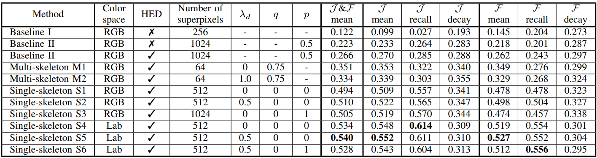

Skeletonization Combined with Deep Neural Networks for Superpixel Temporal Propagation

Summary
- The project explores the potential applications of the medial axis transformation in the temporal propagation of superpixels, combining deep neural networks, a superpixel algorithm, and the medial axis transformation. It discusses the relevance of the medial axis representation in visual processing, with evidence from previous studies showing its presence in early visual processing areas of the brain and its role in figure-ground segregation.
- The study extends the superpixel algorithm by incorporating the medial axis transformation and deep neural network-based optical flow and depth estimation for temporal propagation. It introduces two temporal extensions: the ‘multi-skeleton’ method and the ‘single-skeleton’ method, which have been shown to improve the quality of the propagation, indicating the relevance of these methods in visual processing.
- The experimental results support the effectiveness of these methods in improving the quality of temporal propagation, particularly through the combination of skeletonization, superpixel computation, optical flow, and edge enhancements.

Task and motivation
Temporal object tracking is a crucial aspect of computer vision, enabling the continuous monitoring and analysis of objects over time in video sequences. Incorporating superpixels into temporal object tracking offers several advantages, primarily by grouping pixels with similar properties into coherent regions, facilitating more robust tracking performance. Furthermore, depth information plays a pivotal role in enhancing tracking accuracy, allowing for better discrimination between foreground and background objects and handling occlusions effectively. Edge detection algorithms contribute to the tracking process by identifying object boundaries, enabling more precise localization and tracking of objects amidst cluttered backgrounds.
The "Law of common fate" Gestalt principle says that elements which move in the same direction are more likely considered as belonging together than elements which move in different directions or don’t move at all. It informs the design of tracking algorithms to prioritize moving objects and maintain their continuity across frames. Integrating these elements — superpixels, depth cues, edge detection, and the Gestalt principle — can significantly improve the reliability and efficiency of temporal object tracking systems, enhancing their applicability in various real-world scenarios such as surveillance, autonomous driving, and human-computer interaction.
Proposed method
The 'Single-skeleton' method for video propagation is a sophisticated algorithm that combines the medial axis transform, optical flow estimation, and superpixel refinement to propagate visual objects across video frames. By first extracting the skeleton of the mask using the medial axis transform and then translating each skeleton pixel based on the local optical flow between frames, the algorithm effectively morphs the mask over time. The use of distance fields and disk drawing around translated skeleton pixels ensures accurate and smooth propagation of the object mask.

Results
The experimental results demonstrate the effectiveness of the 'Single-skeleton' method in propagating visual objects across video frames. The algorithm successfully morphs the object mask over time, maintaining the object's shape and position with high accuracy. By incorporating the medial axis transform, optical flow estimation, and superpixel refinement, the algorithm achieves smooth and precise object propagation, making it a valuable tool for visual processing tasks.
Benchmark results for different methods: centroid and superpixel translational baselines and two skeleton-based algorithms for video propagation. Multiple hyperparameter configurations were evaluated during the experiments, only the best ones are presented from each group. 𝒥 and ℱ are the Jaccard index and the Boundary accuracy.
BibTex
@INPROCEEDINGS{fodor2019skeletonization,
author={Fodor, Ádám and Fóthi, Áron and Kopácsi, László and Somfai, Ellák and Lőrincz, András},
booktitle={2019 International Joint Conference on Neural Networks (IJCNN)},
title={Skeletonization Combined with Deep Neural Networks for Superpixel Temporal Propagation},
year={2019},
pages={1-7},
doi={10.1109/IJCNN.2019.8852391}
}